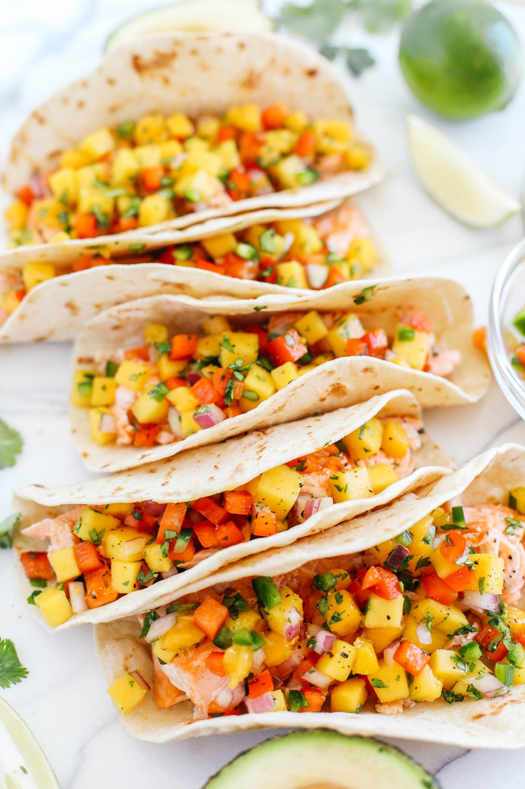

Salmon Tacos with Mango Salad

Description
Grilled salmon wrapped up in a small tortilla,
topped with peach-mango salsa, shredded cabbage,
avocado, and a special sauce.
The total time to make will take 2 hours and 3 minutes
(50 minutes for prep, 13 minutes to cook, and 1 hour for storing)
for 6 servings. Each servings will contain 876 calories.
Ingredients
Mango Salsa
- 3 mangoes, diced
- 2 peaches, diced
- 3 poblano peppers, seeded and diced
- ½ red onion, diced, or more to taste
- ½ lime, juiced, or more to taste
- 1 bunch cilantro, chopped, divided
Special Sauce
- 1 (8 ounce) container sour cream
- 3 tablespoons mayonnaise
- 1 tablespoon ketchup
- ⅛ teaspoon ground cayenne pepper
- salt and ground black pepper to taste
- 24 (6 inch) corn tortillas
- cooking spray
- 2 pounds fresh salmon
- 1 small head cabbage, shredded
- 3 avocados, sliced
- 2 limes, cut into wedges
Steps
- Combine mangoes, peaches, poblano peppers, red onion,
juice of 1/2 a lime, and 1/2 the cilantro in a large
bowl to make mango salsa. Cover with plastic wrap and
refrigerate, at least 1 hour, preferably overnight
- Mix sour cream, mayonnaise, ketchup, cayenne pepper,
salt, and black pepper in a small bowl to make special sauce
- Preheat oven to 350 degrees F (175 degrees C).
Arrange tortillas on a baking sheet
- Preheat a grill pan over medium-high heat; coat with cooking spray.
Cook salmon until easily flaked with a fork, about 4 minutes per side.
Transfer to a plate and flake into smaller pieces with a fork
- Heat tortillas in the preheated oven until warmed through, about 5 minutes
- Divide salmon among tortillas. Top with mango salsa, special sauce, shredded cabbage,
avocados, and remaining cilantro. Wrap up tacos and serve lime wedges alongside
Cook's Note:
- Use flour tortillas instead of corn tortillas if preferred
- Substitute nectarines for the peaches if desired
- Substitute Anaheim peppers for the poblano peppers if desired